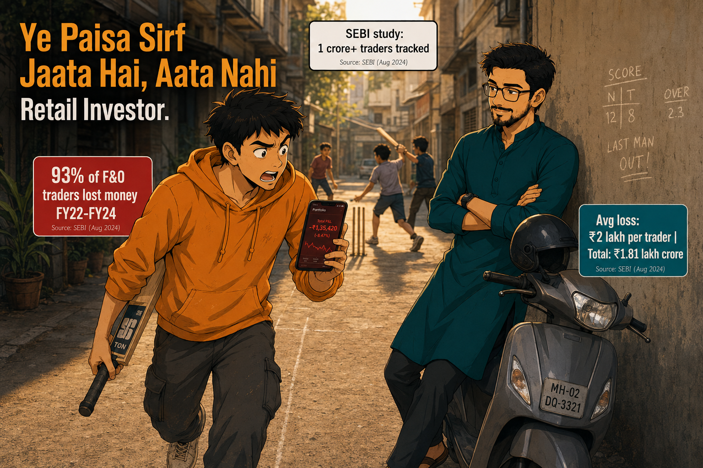

Home › Blog › Crowd & Behaviour › Ye Paisa Sirf Jaata Hai, Aata Nahi
93% of individual F&O traders lost money between FY22 and FY24. The pattern isn't bad luck — it's three repeatable behavioural mistakes that cost Indian retail investors ₹1.81 lakh crore in three years.
By Neo & Teo │ TrendTurtles · 7 min read · Published: June 2025
Crowd & Behaviour Cause & Effect

A gully in Bandra West, late afternoon. Eight guys, a tennis ball, chalk stumps on a wall. The kind of cricket where confidence is louder than skill.
Teo has been batting for twelve minutes. He's been playing okay — mostly defensive, one clean drive. Then a short ball arrives and he swings hard. The ball clears the boundary marker — a plastic bucket somebody placed at the edge. His teammates go mad.
The next ball comes. Same shot. Wide outside off stump, it clips the edge — but lands in a fielder's hands. Third ball: he tries the same shot again. Stumped.
Teo walks off, bat under his arm, phone already out. Nifty -2.1% on the screen. He looks at his portfolio — down ₹14,000 since Tuesday. He stares at it, frowning.
Neo is leaning against his scooter at the edge of the lane, arms crossed, watching everything. He doesn't say a word — until Teo reaches him.
"Yaar, ek achhi trade thi last week — Adani call option, 40% return. Ab samajh nahi aata kyun sab down hai," — Teo to Neo, unlocking his phone impatiently.
"Teen balls. Usi shot." — Neo to Teo, glancing toward the pitch without moving.
"Woh alag tha yaar, that was—" — Teo to Neo, stopping himself mid-sentence.
"Ek boundary ne tujhe bata diya ki tu consistently better hai?" — Neo to Teo, one eyebrow up.
Teo puts the phone face-down on the scooter seat.
That one question stays in the air. The fielders are already arguing about the next batter. Nobody noticed anything profound happened at the boundary of a gully cricket lane in Bandra.
Did You Notice?
Teo didn't start playing badly on the second ball. His skill was exactly the same. What changed was his confidence — and his confidence was built on one data point. One boundary. In trading, one winning trade does the exact same thing. It doesn't upgrade your skill. It upgrades your self-belief — without any corresponding upgrade in process. That gap is where the money disappears.
The numbers are not ambiguous. SEBI's September 2024 study tracked over 1 crore individual traders in the equity F&O segment across FY22 to FY24.
"93 out of every 100 retail traders in F&O. Average loss — ₹2 lakh per person over three years. Combined loss — ₹1.81 lakh crore." — Neo to Teo, reading from a printed sheet he pulls from his scooter bag.
"Matlab… itne sab log, itna paisa?" — Teo to Neo, staring at the number.
"Top 3.5% of losers — average ₹28 lakh each. Aur sirf 1% ne ₹1 lakh se zyaada profit banaya, after costs." — Neo to Teo, without drama.
The ISB study — based on 1.4 billion trades by 2.5 million NSE investors — found three repeating patterns behind these losses: the disposition effect (selling winners early, holding losers long), overconfidence after early gains, and herd behaviour that consistently gets the timing wrong.
"Toh yeh luck ka kaam nahi hai?" — Teo to Neo, sitting down on the kerb now.
"Luck toh thoda bahut hoga. Pattern consistently repeat ho raha hai — 4 saal se. That's not luck." — Neo to Teo, leaning against the scooter.
There's one more number worth sitting with. The CFA Institute's 2025 analysis of SEBI data shows retail trader net losses in FY25 widened by 41% to ₹1.05 lakh crore in a single year. The pattern isn't shrinking. It's growing.
One good trade feels like discovery. The ISB's study found overconfident traders increased position sizes after wins — and consistently preceded larger losses. PMC 2022 analysis of BSE data from 2005–2020 confirmed this pattern across 15 years. The gully cricket shot didn't get better. The bet just got bigger.
Retail investors sell winning stocks too quickly and hold losing ones too long — documented in the Indian Journal of Research in Capital Markets across BSE data. The result: portfolios slowly concentrate in their worst positions. Paisa jaata hai — not in one crash, but in this quiet, daily backwards selection.
Retail traders enter after a headline — after the stock has already moved. They exit when fear is loudest — usually near the bottom. Invezz/Religare 2025 data showed retail held 26.56% in small-caps at peak. Institutions bought during that correction. Retail sold.
IF: You've had 2 winning trades in a row and feel like increasing position size
THEN: Do not increase size. Instead, invest the profit amount in Nippon India ETF Nifty 50 BeES (NSE: NIFTYBEES) — a passive Nifty 50 tracker that removes the overconfidence variable entirely. Source: Nippon India AMC — NIFTYBEES Product Page
AVOID: Adding leverage or moving to F&O contracts on the back of a confidence spike — SEBI data shows this is the single most common precursor to the ₹28 lakh average loss bracket.
IF: You are holding a stock that is down more than 15% from your buy price and you haven't reviewed its fundamentals in 30 days
THEN: Review earnings, debt, and promoter holding immediately. If fundamentals have deteriorated — exit. The disposition effect means you are statistically likely to keep holding it. Override that default. Source: SEBI Study on Profit and Loss of Individual Traders FY22–FY24
AVOID: Averaging down in small-cap stocks with weak institutional ownership — retail held 26.56% of small-caps at peak; institutions held 21.36%, giving them no cushion during the correction.
IF: You are about to buy a stock because you saw it trend on Twitter/X or receive it as a WhatsApp tip
THEN: Wait 48 hours. Check NSE price history — if the stock is already up 10%+ in the last 5 sessions, the tip has already been priced in. You are the exit, not the entry. If you still want exposure to the sector, use Nippon India ETF Nifty 50 BeES (NSE: NIFTYBEES) for broad market participation without timing risk. Source: Outlook Business — SEBI F&O Loss Report September 2024
AVOID: Any finfluencer-recommended trade without a disclosed SEBI registration number — SEBI banned multiple influencers in 2024 for misleading retail investors without conflict-of-interest disclosures.
Two hours later. The gully match has ended. The street is quieter. Teo and Neo are still at the scooter.
"Toh kya main trading chhod doon?" — Teo to Neo, genuinely asking.
"Chhodni nahi hai. Ek system banana hai — aur woh system tere mood se independent hona chahiye." — Neo to Teo, starting the scooter.
"Matlab?" — Teo to Neo, pocketing his phone.
"Matlab — next time boundary maare, pehle ek ball skip kar. Phir dekh kya feel hota hai." — Neo to Teo, pulling out slowly.
Teo watches the scooter turn the corner. He looks down at his phone. Pauses. Then puts it in his pocket without opening it.
The 93% stat doesn't mean markets can't be navigated. It means navigating them requires something most retail investors don't have — not intelligence, not capital, not a Bloomberg terminal. A system that runs independent of how you feel after your last trade.
Know someone who doubled their position after one good trade? Tag them or send this across — LinkedIn, Facebook, Instagram, YouTube.
Trump. China. Sensex. — How the Beijing Summit Moved Indian Markets
How India's 2026 Heatwave Moved AC Stocks — And Why the IMD Forecast Was the Real Signal
These articles give you the framework — so the next time you feel overconfident after a win, you already know what to watch.
Why Markets Move Before the News — Market Sab Jaanta Hai